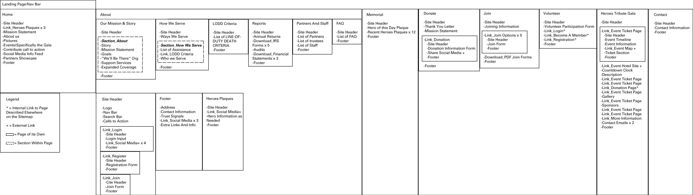
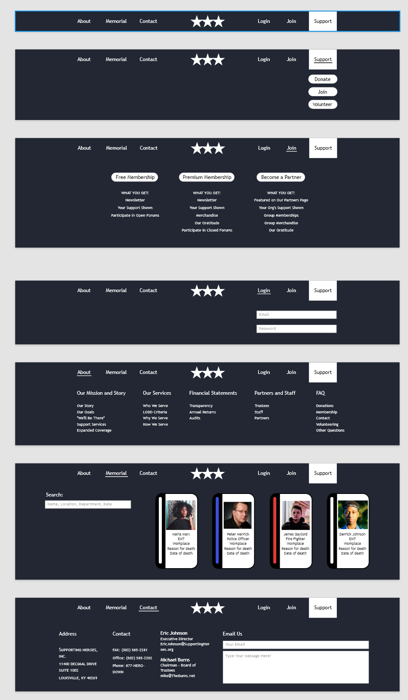

Supporting Heroes Website Redesign
Goal
The goal was to redesign the website for the non-profit given to us by our professor. The one given to me was the Supporting Heroes website. Supporting Heroes is a group that works to honor service members who die in the line of duty and to help the families left behind by their loss.
The website needs to be convincing enough that its cause is worth donating money to and trustworthy enough for people to feel comfortable doing so.
Research
The website beforehand had many problems. I identified three major ones that would need to be resolved for me to consider the redesign a success.
- The abundance of information provided by the site was disorganized and difficult to parse if one was looking for specific information.
- The site was aesthetically displeasing, no doubt leading users to have a lower quality esperience, which would in turn lead them to donate to the cause less often.
- The tone, or mood of the webite was similar to that of a casino or a fireworks store. This is grossly inappropriate for the goal of the website.
The old site-map. I prefer using the site-map as an opportunity to also map out the full experience of what will be encountered where by the user. This also helped when determining what was redundant, out of place, or useless.
The first task was to make a site-map of the website as it was, and then to make a new one that fixed the problem of disorganization. This is the stage where I was also cutting information and pages that proved redundant or out of date. For example, the videos section of the website was cut due to the most recent video being 7 years old. If the side is not maintained then it will look less trustworthy when it's time to donate.
The new site-map demonstrates the opportunity for conciseness that was missed in the original design. In heindsight, I think the new site-map should have been developed in conjunction with the concept, rather than befroe, so that even the structure of the site lent itself to the end goal.
Concept
Improving the aesthetic quality of the website went in hand with fixing the problem of tone. Instead of a casino, I determined the tone should be more akin to a memorial site, because to an extent that's what it is. This came in the form of removing all the bright DONATE buttons shoved into every empty space on the site.

This was especially egregious on the memorial section, which was supposed to be the most respectful page.
I settles on the concept being "respectful silence and hope." This might seem like a pretty bare bones concept, and it is. This was my second project in my web design class, and I was still finding my feet.
The concept allows for a fix to the problems keeping the website from its goal, but not a new direction that would help to stride towards that goal. It also doesn't give any art direction. Jumping straight from the tone to the visual design without bridging the gap through fleshing out the concept was a mistake, but luckily it's the type we learn from.
Content
Since the biggest problem was navigating the information, I started by designing a robust navigation system that would be easy to use and would divide the information on the website in an intuitive way so that the user would never have to wonder where to go when looking for something specific.
After that, I established a visual system for the memorial page's card layout. It needed to be respectful without being somber, so I was careful not to put any big DONATE buttons anywhere on the site except for the header so that people can go there on their own time. All of the images were taken from pexels.

After filling out the information, I made the homepage. The homepage was kept for last becauseI wanted to know exactly what it was supposed to draw people into. If you're interested you can explore the prototype below!